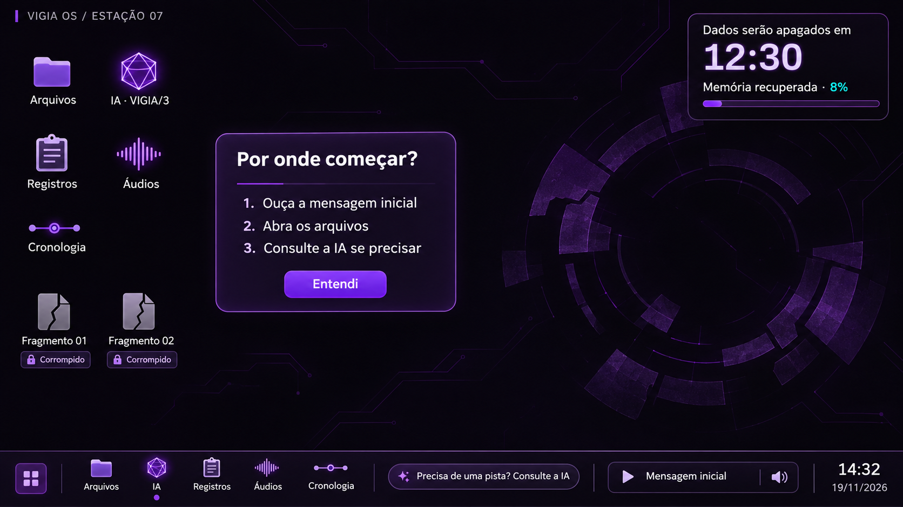
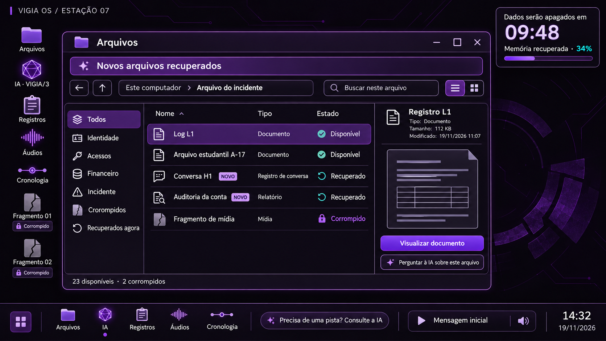
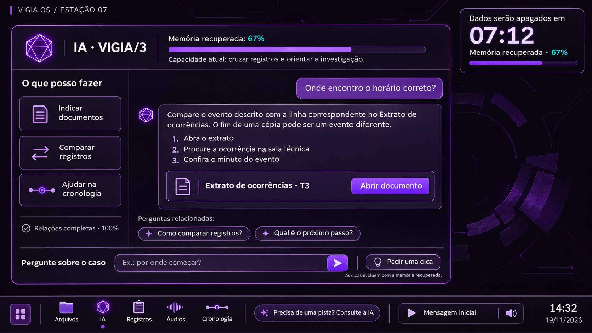
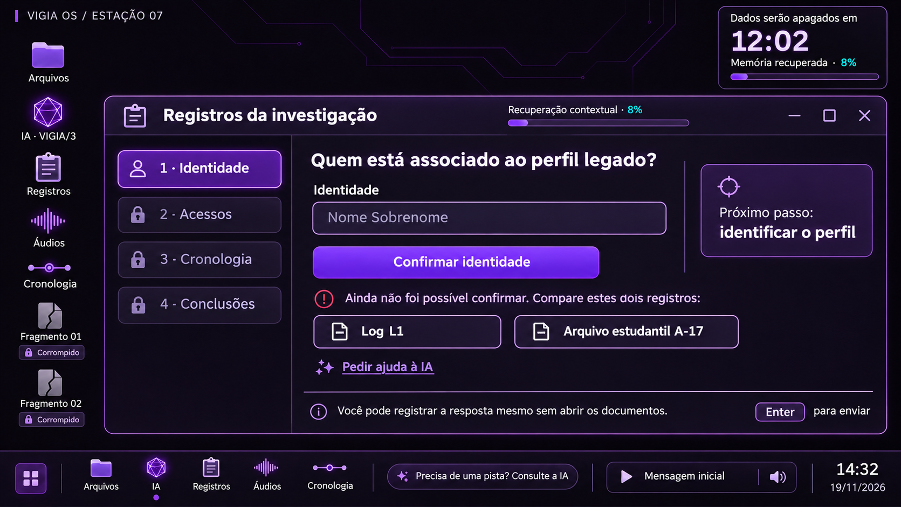
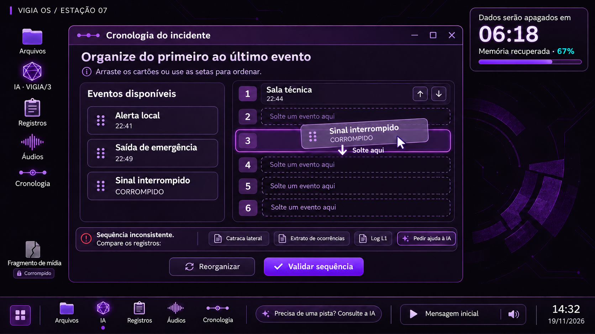
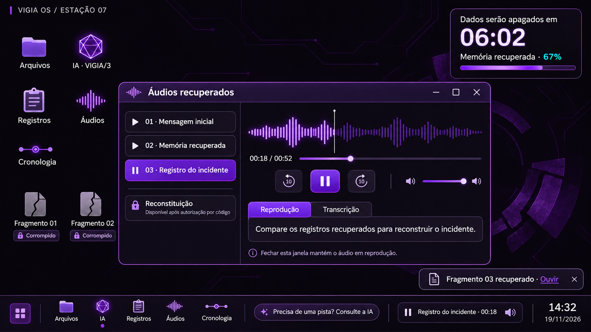
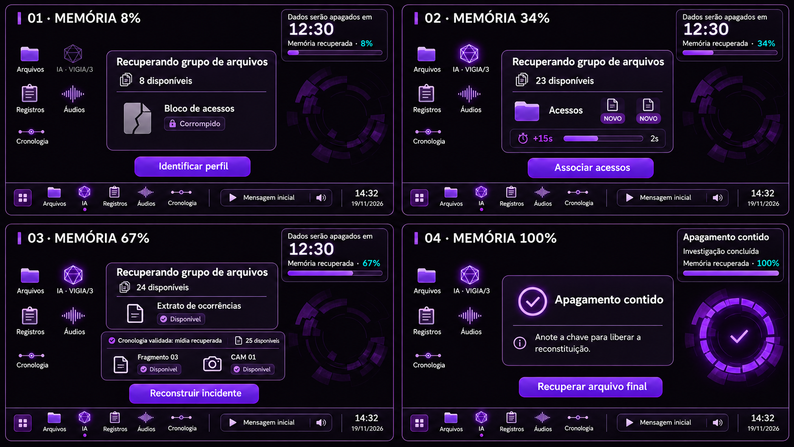
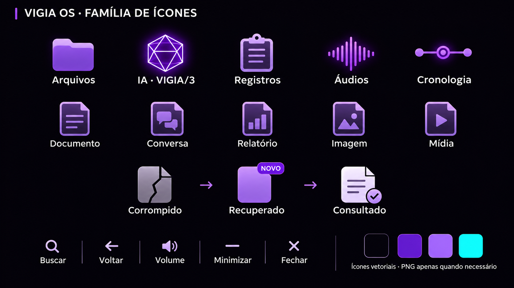
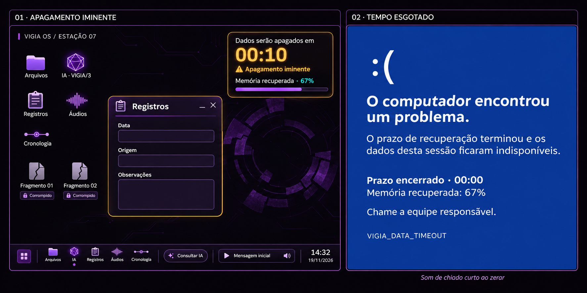
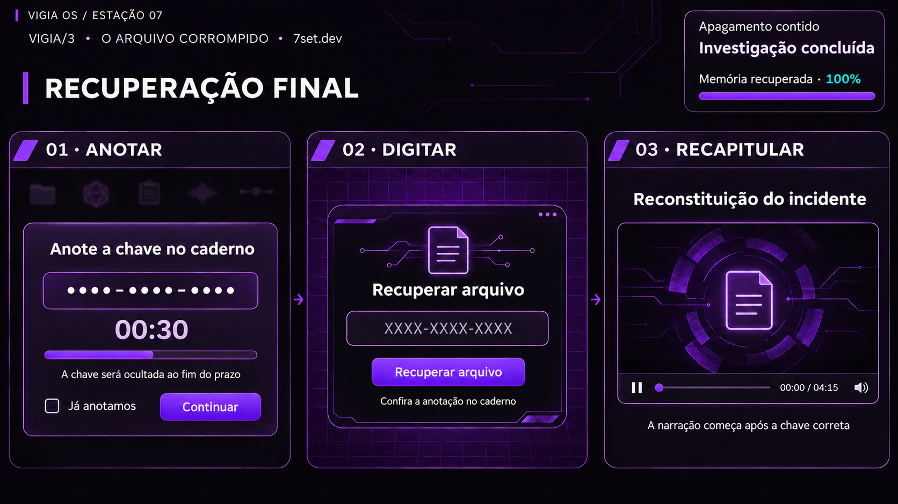

Área de trabalho e início
Atalhos claros, orientação inicial, prazo de apagamento e relógio real.

Área de trabalho, aplicativos, dados corrompidos e uma IA que recupera suas capacidades junto com as evidências.
10 referências visuais geradasRoteiro completo45 grupos de assetsAtalhos claros, orientação inicial, prazo de apagamento e relógio real.

Lista, categorias, busca, estado corrompido e prévia; metadados serão vinculados ao catálogo.

Capacidade progressiva, perguntas sugeridas, passos e acesso direto aos documentos.

Etapas, foco no campo, envio por Enter e documentos úteis após erro.

Arrasto com encaixe visível e alternativa por setas. A sequência da imagem é exemplo de interação.

Playlist, volume, transcrição e reprodução contínua ao fechar. Durações da imagem são ilustrativas.

8%, 34%, 67% e 100%; catálogo com 8, 23, 24 e 25 documentos.

Aplicativos, tipos de arquivo, estados e controles; produção preferencial em SVG.

Aviso final e substituição integral pela falha encenada com chiado curto.

Chave mascarada na referência. A exposição dura 30 segundos; a inserção vem depois.

O Arquivo Corrompido | Proposta para aprovação | 19/11/2026
Esta entrega planeja a transformação do terminal em uma área de trabalho fictícia de computador. As imagens são referências de direção visual. Nenhuma alteração deste planejamento foi aplicada ao sistema em uso.
A investigação acontece dentro de um computador comprometido. O grupo abre aplicativos, recupera arquivos e reconstrói o incidente antes que o processo de apagamento termine. Cada resposta correta recupera informações e melhora a capacidade de orientação da VIGIA/3.
A área de trabalho será a navegação principal. Terá papel de parede, atalhos com nomes claros, barra de tarefas, relógio real e janelas de aplicativos. A experiência continuará funcionando inteiramente offline no navegador, inclusive pela abertura local do index.html. O computador representado é uma interface do jogo: não será necessário acessar o explorador real do Windows.
Direção recomendada: aparência reconhecível de um computador, com o roxo e os elementos cyber do projeto. A familiaridade deve ajudar a investigação. As informações essenciais precisam aparecer sem exigir que o participante descubra gestos escondidos.
Permanecem a narrativa, as 25 evidências digitais, os três fragmentos de áudio, as transcrições, os seis documentos físicos, as respostas oficiais, a IA offline e a reconstituição final. Preservam-se a aceitação de respostas corretas sem consulta prévia, o envio por Enter e a ajuda contextual depois de erros.
A interface com abas será substituída por aplicativos em janelas. O painel de progresso vira recuperação de memória; o relógio passa a representar o prazo até o apagamento; os documentos bloqueados ganham representação de arquivos corrompidos; a tela de tempo esgotado passa a ser uma falha azul de sistema.
O fluxo final permanece no mesmo computador: conclusões corretas, chave visível por 30 segundos para anotação no papel, tela para digitar a chave e abertura automática da recapitulação. Isso evita depender de uma segunda estação e de uma transferência manual de estado entre computadores.
| Aplicativo | Função | Ação principal |
|---|---|---|
| Arquivos | Explorar, pesquisar e abrir as evidências | Abrir documento |
| IA · VIGIA/3 | Orientar, comparar informações e indicar caminhos | Perguntar ou pedir dica |
| Registros | Registrar identidade, acessos e conclusões | Confirmar resposta |
| Cronologia | Ordenar os seis eventos do incidente | Validar sequência |
| Áudios | Ouvir fragmentos e consultar transcrições | Reproduzir ou ler |
Cronologia terá atalho próprio e também poderá ser aberta pelo aplicativo Registros. Os dois acessos abrirão a mesma instância e o mesmo estado, evitando atividades duplicadas.
O arquivo final de reconstituição aparecerá como mídia protegida. Sua abertura só será liberada depois da inserção da chave, preservando o percurso aprovado.
Atalhos com símbolo e nome ficam à esquerda. O centro permanece livre para janelas. O papel de parede usa preto, circuitos discretos e um anel fragmentado de memória. Arquivos corrompidos relevantes aparecem em uma área própria do desktop, com no máximo três atalhos de recuperação; os demais ficam no explorador. Assim a tela não vira um conjunto de 25 ícones.
O topo reserva uma faixa de sistema: objetivo atual à esquerda e prazo de apagamento à direita. As janelas, inclusive maximizadas, respeitam essa faixa e a barra de tarefas. O relógio e a porcentagem nunca desaparecem atrás de um documento.
Na barra inferior, IA e Registros ficam lado a lado, fixos e identificados por texto. O mini-player fica à esquerda desses dois atalhos. Arquivos e Cronologia permanecem fixados no restante da barra; o relógio real e a data ficam no canto direito. As ilustrações mostram a família visual; esta ordem funcional prevalece na implementação.
Não haverá menus decorativos que pareçam funcionais e não façam nada. Botões desabilitados explicarão o motivo, por exemplo: “Disponível após confirmar os acessos”.
Antes da partida, a tela de preparação pede papel, caneta e teste de som. O clique “Iniciar investigação” prepara a reprodução de áudio, inicia a contagem de 12:30 e abre a área de trabalho com 8% de memória. O início não dependerá de áudio automático antes de um clique.
Uma orientação curta, dispensável, aponta três ações: ouvir a mensagem inicial, abrir Arquivos e consultar a IA. A mensagem não bloqueia os aplicativos. Uma vez dispensada, continua disponível em “Como usar” na área de trabalho.
Texto do objetivo inicial: “Identifique o perfil legado para recuperar o próximo bloco de dados”. O sistema sugere um caminho, mas permite abrir qualquer conteúdo já disponível e registrar uma resposta correta imediatamente.
A janela terá caminho de navegação, voltar, subir pasta, busca, modos lista/ícones, categorias à esquerda e detalhes do item selecionado à direita. Categorias: Todos, Identidade, Acessos, Financeiro, Incidente, Corrompidos e Recuperados agora.
As categorias são filtros do catálogo existente. O mesmo documento não terá cópias com nomes diferentes. O caminho apresentado será fictício, por exemplo “Este computador > Arquivo do incidente > Acessos”. Datas e tamanhos exibidos devem vir de metadados definidos; datas ilustrativas dos mockups não serão usadas como pistas por acidente.
Um clique seleciona e mostra a prévia. O botão “Abrir documento”, Enter com o item selecionado ou duplo clique abrem o leitor. A prévia não substitui o documento integral.
| Estado | Aparência | Comportamento |
|---|---|---|
| Disponível | Ícone normal e texto legível | Abre o documento |
| Não consultado | Pequena marca de novo conteúdo | Continua disponível, sem obrigatoriedade |
| Corrompido | Ícone com fratura, cor reduzida e cadeado | Explica a etapa necessária; não abre a pista |
| Recuperado agora | Ícone restaurado e selo NOVO | Aparece no filtro de recuperados |
| Consultado | Marca discreta de leitura | Pode ser reaberto livremente |
Conteúdo bloqueado não deve aparecer em miniaturas legíveis, busca, prévia, dicas ou nome que entregue sua resposta. Antes da recuperação, usar nomes neutros como “Bloco de acessos”, “Registro temporal” e “Fragmento de mídia”.
Ao recuperar uma etapa, os arquivos correspondentes mudam de estado, com transição visual de até 800 ms. Um aviso oferece “Ver arquivos recuperados”; não abre vários documentos sozinho. O grupo pode continuar preenchendo respostas. Os selos de novidade permanecem até os itens serem consultados ou o grupo dispensar a indicação.
O leitor preserva a imagem original da evidência, com ajuste à janela, zoom, navegação anterior/próximo e rolagem. Oferece “Perguntar à IA sobre este arquivo” e “Registrar resposta”. O primeiro leva o documento atual como contexto; o segundo abre e foca o campo relevante sem perder a posição do leitor.
Não acrescentar horários, conclusões ou destaques sobre as evidências que alterem o nível de interpretação já aprovado. T3 continua ajudando a localizar o confronto; CAM01 continua exigindo leitura da integridade dos trechos.
A IA terá nome, símbolo constante, porcentagem de memória, capacidade atual e explicação do próximo avanço. Seu campo terá exemplos clicáveis: “Por onde começar?”, “Onde encontro essa informação?”, “Como comparo estes registros?” e sugestões próprias da etapa.
As respostas continuam organizadas em orientação curta, passos, documentos e ações. Os documentos indicados abrem diretamente no leitor. As ações podem abrir Registros, Cronologia ou Áudios. Perguntas de seguimento preservam o contexto já existente.
| Memória | Capacidade exibida | Apoio esperado |
|---|---|---|
| 8% | Orientação inicial | Explicar objetivo e sugerir comparação entre os primeiros registros |
| 34% | Relações e acessos | Diferenciar acesso físico e digital e indicar cruzamentos |
| 67% | Reconstrução temporal | Ajudar na sequência; após validá-la, interpretar os registros do evento |
| 100% | Memória integral | Sustentar a explicação completa na recapitulação |
A validação da cronologia amplia a capacidade temporal dentro dos mesmos 67%. Não criar uma etapa de 85%, pois os áudios atuais anunciam 67%. O motor continua sendo a assistente local já existente, sem prometer compreensão irrestrita ou dependência de internet.
A presença constante virá de um atalho fixo identificado, mensagem de disponibilidade na abertura, ação no leitor e ajuda nos erros. Lembretes contextuais de 45 segundos podem continuar como pequenos avisos sem som; serão suspensos enquanto o usuário digita ou durante a chave, recapitulação e falha. Não abrir o aplicativo sozinho.
O aplicativo mostra as quatro etapas com estado: pendente, disponível e concluída. Exibe uma pergunta por tarefa, campos bem identificados e botão de confirmação. Placeholders finais: “Nome Sobrenome”, “Ex 1234” e “HH:MM”. Rótulos das conclusões devem especificar a identidade do invasor, a credencial usada para entrar no prédio e o minuto do confronto fatal.
Enter e Enter numérico enviam o formulário ativo pelo mesmo caminho do botão. Não enviar enquanto houver composição de texto, em campos multilinha ou ao pressionar Enter em outro aplicativo.
Erro aparece junto ao campo: motivo, documentos recomendados e ação de consultar IA. As indicações respeitam a disponibilidade real do catálogo. Resposta correta é válida mesmo que o documento nunca tenha sido aberto.
O atalho “Registrar resposta” dentro de um documento ou resposta da IA abre o aplicativo na altura do campo e o foca. O atalho principal da área de trabalho/barra de tarefas e Alt+2 abrem o topo do aplicativo, equivalente à navegação principal atual.
A instrução será “Organize do primeiro ao último evento”. Haverá seis posições numeradas e cartões com área de arrasto evidente. Ao mover, o cartão terá cópia fantasma, posição de encaixe destacada e espaço reservado para evitar saltos confusos.
Arrastar não será a única forma: botões subir/descer e controles de teclado permitem a mesma ordenação. Em telas pequenas, usar lista vertical com alvos grandes, sem depender de arrasto horizontal. O botão de validar só avalia a sequência, sem exigir consulta aos documentos.
Se houver erro, apresentar Catraca lateral, Extrato de ocorrências e Log L1, com T3 no meio, além de ajuda da IA. O feedback orienta a comparar os registros sem reorganizar automaticamente a sequência correta. Ao acertar, +15s, mídia restaurada, Fragmento 03 e CAM01 disponíveis e formulário final liberado.
O aplicativo apresenta os três fragmentos, o estado de acesso, reprodução/pausa, avanço e retorno de 10 segundos, barra de progresso, volume e transcrição. Uma waveform discreta pode ser desenhada pela interface; não é necessário gerar imagens para cada segundo.
O mini-player da barra de tarefas mostra o áudio atual e permite pausar e ajustar volume de qualquer aplicativo. Fechar a janela não interrompe o áudio. Só pode existir uma narração ativa por vez; a entrada na reconstituição encerra a reprodução anterior.
Separar volume de narração e efeitos, com silenciamento claro e persistente durante a rodada. A transcrição deve continuar acessível para quem não puder ouvir. Tempos mostrados nas imagens são ilustrativos; a duração deve ser lida do arquivo real.
| Marco | Memória | Evidências disponíveis | Mudança e próximo passo |
|---|---|---|---|
| Início | 8% | 8 de 25 | Arquivo inicial e Fragmento 01; identificar o perfil |
| Identidade correta | 34% | 23 de 25 | Recuperar 15 evidências de acessos/finanças e Fragmento 02; +15s |
| Dois acessos corretos | 67% | 24 de 25 | Recuperar T3, habilitar a cronologia; +15s |
| Cronologia correta | 67% | 25 de 25 | Recuperar CAM01 e Fragmento 03; liberar conclusões; +15s |
| Conclusões corretas | 100% | 25 de 25 | Conter apagamento, parar o relógio e mostrar a chave |
As quantidades acima contam evidências do catálogo, não áudios. Os 17 arquivos inicialmente bloqueados ganham apresentação corrompida sem criar novas pistas obrigatórias. Três atalhos neutros do desktop representam os blocos principais e remetem ao explorador.
A memória é integridade recuperada, não tempo de vida do computador. A barra sempre cresce por validação. O relógio sempre diminui com o tempo, exceto pelos três bônus. São indicadores diferentes, com rótulos e formatos distintos.
O ganho de +15s será explicado como adiamento do apagamento após recuperar um bloco. Aviso pequeno por 2 segundos, sem botão, sem escurecer fundo e sem bloquear digitação. A animação do aviso não define o valor do bônus.
Texto permanente: “Dados serão apagados em 12:30”. O tempo real da barra de tarefas serve apenas como relógio do computador; os horários das evidências pertencem ao incidente. Usar rótulos distintos para não confundir esses três tempos.
Preservar a duração atual: 750 segundos iniciais e três bônus únicos de 15 segundos, chegando a 795 segundos de orçamento total. Minimizar aplicativos, ler documentos e ouvir áudios não pausa a contagem. O cálculo será baseado em tempo decorrido, para que troca de abas e queda de quadros não concedam tempo indevido.
| Restante | Visual | Som |
|---|---|---|
| Acima de 60s | Painel roxo estável | Efeitos usuais |
| De 60s a 11s | Aviso âmbar e texto “Apagamento iminente” | Alertas em 60, 45, 30, 20 e 15s |
| De 10s a 1s | Numeral evidente e pulsação leve | Tique-taque a cada segundo |
| 0s | Substituir toda a experiência por tela azul | Chiado curto, com término e volume controlado |
Ao zerar: congelar interação pública, pausar narração, cancelar avisos pendentes, tocar chiado de aproximadamente 1,2 segundo com entrada e saída suaves e mostrar a falha azul. O efeito respeita o silenciamento. Não usar estroboscopia nem ciclos sonoros intermináveis.
Texto proposto para a falha: “O computador encontrou um problema e os dados desta sessão ficaram indisponíveis.” Abaixo: “Prazo de recuperação encerrado · 00:00”, “Memória recuperada: XX%”, “Chame a equipe responsável.” e código fictício “VIGIA_DATA_TIMEOUT”. O percentual representa memória recuperada, não uma simulação de reparo.
A falha é encenada dentro do navegador; não apaga arquivos reais, não reinicia o computador e não mostra um botão público para burlar o prazo. A operação preserva a autorização de continuação sem cronômetro e o reinício completo já existentes.
Se um bônus elevar novamente o restante acima de um limite de alerta, a aparência volta à faixa correspondente; não repetir o mesmo alerta em duplicidade no mesmo segundo. No limite exato de expiração, o motor decide primeiro se a rodada ainda está ativa: uma resposta enviada após o prazo não pode reabrir a sessão.
Conclusões corretas suspendem o processo de apagamento e encerram o relógio de análise. O sistema chega a 100% e passa a um fluxo dedicado sem aplicativos ou atalhos públicos capazes de reapresentar a chave.
A imagem de referência usa uma chave mascarada para não expor a solução nas pranchas. O código oficial BA17-2847-2246 permanece inalterado na futura implementação. A proteção é de percurso do jogo, coerente com o sistema local atual.
O prazo de apagamento já estará contido durante a anotação e a inserção. A contagem de 30 segundos pertence só à exposição da chave. Não somar esse tempo ao cronômetro da investigação.
Manter uma única aplicação e um único estado compartilhado. As janelas serão apresentações desse estado. Abrir ou fechar um aplicativo não poderá recriar o motor, duplicar contadores ou reiniciar áudio.
| Componente | Responsabilidade planejada |
|---|---|
| engine.js | Preservar validações, disponibilidade e percentuais |
| data.js | Preservar catálogo, IDs e soluções; adicionar metadados de apresentação separados |
| vigia.js | Preservar conhecimento, contexto, níveis e filtros de documentos |
| countdown.js | Preservar tempo, bônus e sinais; adaptar apresentação e conferência do prazo |
| feedback.js | Preservar efeitos; acrescentar chiado de falha e sons discretos de janela/recuperação |
| app.js | Adaptar controle de rodada e ligações entre os aplicativos |
| desktop.js, windows.js | Novos módulos clássicos para desktop, foco, dimensões e instâncias |
| desktop.css, apps.css | Novos estilos do ambiente e aplicativos |
| catalog-ui.js | Metadados de pastas, ícones e estados corrompidos, sem duplicar o gabarito |
Os nomes dos novos arquivos são proposta técnica, não arquivos já implementados. Usar scripts locais clássicos ou solução compatível com file://, caminhos relativos e fontes locais. Evitar dependências de CDN, requisições de rede e carregamento obrigatório via fetch para o catálogo.
Eventos internos previstos: rodada iniciada, resposta validada, memória alterada, conteúdo recuperado, áudio alterado, prazo crítico, tempo esgotado, chave exibida, chave ocultada e recapitulação autorizada. Todos serão derivados do estado real; animações não concedem progresso.
Separar estado da investigação, estado visual das janelas e estado do áudio. O reset limpa os três, além de bônus, alertas, rascunhos, histórico de consulta, chave e autorizações. Manter o comportamento atual de nova rodada ao recarregar; recuperação de partida após atualização da página seria uma decisão separada.
| Fase | Entrega concreta | Critério para avançar |
|---|---|---|
| 1. Congelar referência | Cópia datada do pacote, inventário e percurso atual registrados | Gabarito, mídias, regras e pontos de entrada conferidos |
| 2. Estrutura do desktop | Papel de parede, barra, relógio, painel de prazo e janelas vazias | Abrir/fechar/restaurar e foco funcionam nas resoluções-alvo |
| 3. Migrar aplicativos | Arquivos/leitor, Registros, Cronologia, IA e Áudios ligados ao motor existente | Percurso completo sem regressão nas respostas |
| 4. Recuperação de dados | Ícones corrompidos, filtros, novos arquivos e bônus breve | Contagens 8/23/24/25 e memória 8/34/67/100 corretas |
| 5. Tensão e encerramento | Alertas, chiado, falha azul, chave e recuperação | Expiração bloqueia; chave só libera filme no momento certo |
| 6. Ajuste visual e acesso | Ícones finais, contraste, teclado, zoom e telas menores | Nenhuma ação depende apenas de arrasto, cor ou som |
| 7. Homologação e entrega | Testes offline, piloto com grupo, documentação e inventário atualizados | Aprovação no computador do evento e cópia de retorno disponível |
Priorizar uma versão funcional com as mídias existentes antes dos acabamentos. Cada fase deve ser conferida antes da seguinte. A instalação do pacote novo só acontece depois da aprovação deste planejamento e da validação da versão implementada.
Muitas janelas podem atrapalhar: começar com uma principal e uma auxiliar, mantendo alternância clara na barra. Ícones corrompidos podem parecer defeito real: o clique deve explicar o bloqueio dentro da narrativa e orientar qual tarefa recupera o bloco.
A busca pode entregar pistas antes do momento: resultados e prévias seguem o mesmo filtro do motor. Sons simultâneos podem encobrir falas: usar uma narração por vez, alertas breves e ajuste temporário de volume quando necessário.
A mudança de visual pode exigir locução nova se contradisser instruções antigas. Antes da implementação, conferir os três fragmentos e a narração; reaproveitar tudo que continuar coerente e listar apenas as frases que precisarem de ajuste. Não regravar por padrão.
O orçamento atual permite até 13:15 de investigação, mais 30s de exposição da chave e cerca de 4:15 de recapitulação: aproximadamente 18 minutos, além do tempo gasto digitando a chave e da preparação. Não reduzir prazos ou cortar o filme automaticamente. O piloto deve medir o tempo real do percurso e orientar eventual ajuste aprovado.
Recomendações para aprovação: cinco aplicativos com Cronologia própria; IA e Registros juntos na barra; arquivos corrompidos vinculados às evidências existentes; uma estação física; quatro percentuais canônicos; apagamento contido nas conclusões; tela azul apenas na falha; seis impressos atuais preservados.
As dez pranchas mostram: área de trabalho/início, explorador, IA, Registros, Cronologia, player, recuperação de memória, família de ícones, urgência/falha e sequência final. Consultar a galeria para imagens em tamanho completo e notas de execução.
Os mockups orientam composição, cores, símbolos e hierarquia; não são capturas de um sistema implementado. Microtextos, metadados, arranjos de janelas e tempos ilustrativos serão alinhados ao roteiro antes da implementação. A lista detalhada está em ASSETS_NECESSARIOS.csv e na galeria.
Gerar PNG para fundos e ilustrações que realmente se beneficiem de imagem. Ícones de interface, botões, estados, cronômetros, barras e texto devem preferencialmente ser SVG/HTML/CSS para permanecerem nítidos e acessíveis. Não gerar telas inteiras como imagens de fundo da aplicação.
As referências foram produzidas com a ferramenta nativa de geração de imagens, usando a primeira área de trabalho como referência de estilo. Os prompts integrais e o registro de geração acompanham a entrega. Os PNGs desta entrega são referências, não o conjunto final de assets de produção.
Paleta: fundo #08070C, janela #14111C, ação principal #6426C9, foco #A66BFF, texto claro #E8DCFF, recuperação em ciano discreto e alerta em âmbar. A tela de falha usa azul #153B9A. Manter contraste legível; brilho será um acabamento, sem halo atrás de textos longos.
Usar Space Grotesk nos títulos e IBM Plex Mono em relógios, códigos e pequenos rótulos. Corpo de leitura precisa permanecer confortável, preferencialmente entre 16 e 18px no computador de uso. Números do prazo terão largura fixa para evitar deslocamento a cada segundo.
Escala inicial: ícones de desktop de 56-64px com área clicável mínima de 80x88px; controles de 40-44px; barra inferior de 64-80px; cantos de janelas de 12-16px. A faixa superior deve se adaptar ao espaço disponível, mantendo o prazo e o objetivo fora das janelas. Essas medidas são ponto de partida e serão ajustadas na homologação a 1280x720.
Os mockups usam um painel de prazo amplo para tornar a ideia visível. Na aplicação, compactar o painel e permitir que as janelas aproveitem a largura abaixo da faixa superior. Em 1280x720, não reduzir todo o conteúdo proporcionalmente até os textos ficarem pequenos: compactar controles e permitir rolagem apenas dentro do aplicativo.
Em celular ou tela estreita, uma janela ocupa a área útil e o alternador inferior substitui o arranjo livre. A tarefa permanece a mesma; nenhuma resposta, evidência ou pista muda por causa do tamanho da tela.
Os ícones dos aplicativos terão silhuetas distintas. Bloqueio, novidade, reprodução e erro usarão símbolo e texto além de cor. As animações de recuperação poderão ser desligadas pela preferência de movimento reduzido, mantendo a mesma informação textual.
Gerar um fundo principal sem texto. Fundo final e ruído são opcionais/reaproveitáveis. Ícones em SVG, com PNG transparente opcional para exportação. As 10 pranchas já geradas são referências, não assets finais.
P0: essencial · P1: acabamento recomendado · P2: opcional. Quantidades por grupo, não estimativa de novos arquivos a gerar.
| ID | Prioridade | Grupo | Elemento / nome sugerido | Formato recomendado | Quantidade | Dimensão / duração | Estados | Onde aparece | Produção / observações |
|---|---|---|---|---|---|---|---|---|---|
| V01 | P0 | Fundo | wallpaper-vigia-os | PNG ou WebP | 1 | 2560x1440 | Único; recuperação em camada separada | Todas | Gerar arte sem texto e sem ícones; centro livre para janelas. |
| V02 | P1 | Fundo | wallpaper-recuperacao | PNG ou CSS | 1 | 1920x1080 | Tela de inserção | Final | Reaproveitar grade roxa existente se compatível. |
| V03 | P1 | Textura | ruido-sutil | PNG tile ou CSS | 1 | 256x256 | Discreto | Todas | Opcional; não reduzir contraste ou simular corrupção sobre textos. |
| V04 | P0 | Marca | 7set-dev-wordmark-claro | PNG existente | 1 | Dimensão original | Original | Todas | Reaproveitar a marca aprovada; não gerar nova versão. |
| V05 | P0 | Ícone de app | app-arquivos | SVG + PNG opcional | 1 | Grade 64; PNG 256x256 | Ativo, foco e aberto por CSS | Todas | Pasta roxa reconhecível; sem texto embutido. |
| V06 | P0 | Ícone de app | app-vigia | SVG + PNG opcional | 1 | Grade 64; PNG 256x256 | 8/34/67/100 por CSS | Todas | Núcleo geométrico; luminosidade acompanha capacidade. |
| V07 | P0 | Ícone de app | app-registros | SVG + PNG opcional | 1 | Grade 64; PNG 256x256 | Pendente e concluído por badge | Todas | Prancheta; nome sempre visível nos atalhos. |
| V08 | P0 | Ícone de app | app-audios | SVG + PNG opcional | 1 | Grade 64; PNG 256x256 | Tocando e pausado por CSS | Todas | Onda sonora distinta do símbolo da IA. |
| V09 | P0 | Ícone de app | app-cronologia | SVG + PNG opcional | 1 | Grade 64; PNG 256x256 | Bloqueado, disponível, concluído | Todas | Linha com três nós; bloqueio acrescentado por badge. |
| V10 | P0 | Ícone de arquivo | arquivo-tipos | SVG + PNG opcional | 6 | Grade 32/64; PNG 256x256 | Documento, conversa, relatório, imagem, áudio, vídeo | Explorador | Seis símbolos base, sem gerar cópia por evidência. |
| V11 | P0 | Estado | arquivo-corrompido | SVG | 1 | Grade 64 | Fratura neutra | Antes da recuperação | Aplicar aos tipos e atalhos de blocos; nome não entrega pista. |
| V12 | P0 | Estado | badges-arquivos | SVG + CSS | 4 | 16/20/24 | Cadeado, novo, consultado, recuperado | Explorador | Usar texto junto quando importante; sem significado só por cor. |
| V13 | P0 | Progresso | anel-memoria | SVG ou CSS | 1 base | Escalável | 8/34/67/100 | Desktop e IA | Compor por segmentos; sem quatro PNGs pesados. |
| V14 | P0 | Componente | painel-apagamento | HTML + CSS | 1 | Responsivo | Normal, alerta, crítico, contido | Todas | Texto e números vivos; nunca rasterizar cronômetro. |
| V15 | P0 | Componente | barra-tarefas | HTML + CSS | 1 | Altura 64-80px | Aplicativos ativos e minimizados | Investigação | Mini-player à esquerda de IA/Registros; ambos lado a lado. |
| V16 | P0 | Componente | janela-aplicativo | HTML + CSS | 1 base | Responsivo | Normal, maximizada, auxiliar | Investigação | Barra de título e conteúdo reutilizáveis; respeitar faixa do sistema. |
| V17 | P0 | Controles | controles-janela | SVG | 3 | 16/20/24 | Minimizar, maximizar/restaurar, fechar | Janelas | Reaproveitar ícones vetoriais existentes quando adequados. |
| V18 | P0 | Controles | navegacao-explorador | SVG | 6 | 20/24 | Voltar, subir, buscar, lista, grade, pasta | Arquivos | Botões com rótulo acessível e estados de foco. |
| V19 | P0 | Controles | controles-audio | SVG | 7 | 20/24/32 | Play, pause, voltar10, avançar10, volume, mudo, transcrição | Áudios | Sinais de reprodução não podem depender só da animação. |
| V20 | P0 | Controles | controles-investigacao | SVG | 7 | 20/24 | Enviar, ajuda, check, erro, subir, descer, alça | Registros e Cronologia | Setas alternativas ao arrasto e botão de dica. |
| V21 | P0 | Leitor | evidencias-existentes | PNG/JPG existentes | 25 | Manter originais | Por disponibilidade do motor | Arquivos | Não regenerar conteúdo; preservar T3 e CAM01 aprovados. |
| V22 | P1 | Miniaturas | miniaturas-evidencias | Derivadas locais | Até 25 | 240x320 máximo | Somente documentos disponíveis | Arquivos | Gerar a partir das evidências existentes na implementação; não criar conteúdo novo. |
| V23 | P0 | Cronologia | cartoes-eventos | Imagens existentes + HTML | 6 | Originais + layout responsivo | Disponível, arrastando, encaixado | Cronologia | Preservar IDs, texto e horários; não gerar novos eventos. |
| V24 | P0 | Interação | arrasto-cronologia | CSS + SVG | 1 conjunto | Responsivo | Fantasma, alvo, inserção, foco | Cronologia | Compor dinamicamente; sem PNG de sequência resolvida. |
| V25 | P0 | Componente | toast-bonus | HTML + CSS | 1 | Compacto | 2 segundos; +15s | Três avanços | Sem botão e sem bloquear o próximo campo. |
| V26 | P0 | Componente | toast-recuperacao | HTML + CSS | 1 | Compacto | Arquivos/áudio recuperados | Avanços | Ação abre filtro ou áudio correto; não rouba foco. |
| V27 | P0 | Componente | ia-consulta | HTML + CSS | 1 | Responsivo | Orientação, passos, docs, ações | IA | Reaproveitar resposta estruturada do motor existente. |
| V28 | P0 | Player | waveform-audio | SVG ou Canvas | 1 componente | Responsivo | Progresso e pausa | Áudios | Pode ser estilizada; se real, extrair dos áudios locais. |
| V29 | P0 | Encerramento | tela-falha-azul | HTML + CSS | 1 | Tela cheia | Prazo zero | Falha | Fundo #153B9A, mensagem textual e código fictício; sem imagem de tela inteira. |
| V30 | P0 | Encerramento | simbolo-falha | Texto ou SVG | 1 | Escalável | Estático | Falha | Emoticon simples; não gerar QR ou logotipo do Windows. |
| V31 | P0 | Final | painel-anotar-chave | HTML + CSS | 1 | Central responsivo | 30s e ocultação definitiva no percurso | Final | Preservar chave oficial; não usar a máscara da prancha no jogo. |
| V32 | P0 | Final | terminal-insercao | HTML + CSS | 1 | Responsivo | Vazio, erro, autorizado | Final | Placeholder XXXX-XXXX-XXXX; não exibir chave correta em erro. |
| V33 | P0 | Final | reconstituicao | HTML + imagens existentes | 1 filme | Conteúdo original | Autorizado por chave | Final | Reaproveitar filme narrado de aproximadamente 4:15. |
| A01 | P0 | Áudio existente | fragmentos-01-02-03 | WAV existentes | 3 | Duração real dos arquivos | Pausado, tocando, recuperado | Investigação | Conferir coerência da locução com a nova navegação antes de regravar. |
| A02 | P0 | Áudio existente | narracao-final | WAV existente | 1 | Aproximadamente 4:15 | Uma narração ativa | Final | Reaproveitar e manter sincronização com o filme. |
| A03 | P0 | Áudio novo | chiado-falha | Web Audio ou WAV local | 1 | 1,2s aproximadamente | Somente ao expirar | Falha | Entrada e saída suaves, volume controlado, respeitar mudo. |
| A04 | P0 | Áudio existente | alertas-prazo | Web Audio existente | 1 conjunto | Sinais breves | 60/45/30/20/15 e últimos10s | Investigação | Reaproveitar sinais existentes e conferir sobreposição com voz. |
| A05 | P0 | Áudio existente | chave-tique-taque | Web Audio existente | 1 conjunto | Exibição de30s | Atenção e ponteiro | Final | Reaproveitar efeito atual; independente do relógio da rodada. |
| A06 | P1 | Áudio opcional | arquivo-recuperado | Web Audio | 1 | 0,3-0,6s | Recuperação | Avanços | Sinal suave; não cobrir orientação narrada. |
| A07 | P2 | Áudio opcional | abrir-janela | Web Audio | 1 | Até0,12s | Abertura | Investigação | Opcional; omitir se causar repetição excessiva. |
| T01 | P0 | Tipografia | space-grotesk-bold | TTF local existente | 1 | Original | Títulos | Todas | Preservar arquivo e licença locais. |
| T02 | P0 | Tipografia | ibm-plex-mono | TTF local existente | 1 | Original | Hora, códigos e rótulos | Todas | Corpo textual pode usar família local legível já disponível. |
| T03 | P0 | Conteúdo | microtextos-sistema | HTML/JS dados | 1 conjunto | Texto vivo | Erros, ajuda, bloqueios, próximo passo | Todas | Revisar acentos e linguagem antes da homologação. |
| R01 | P0 | Referência gerada | pranchas-conceituais | PNG | 10 | Paisagem; originais gerados | Referência para aprovação | Esta entrega | Não são assets finais nem telas funcionais. |
| R02 | P0 | Reaproveitamento físico | documentos-impressos | PDF existente | 6 páginas | A4 | Quatro pistas e dois distratores | Cenário físico | Sem alterações; pastas Arquivo e Registros mantidas. |